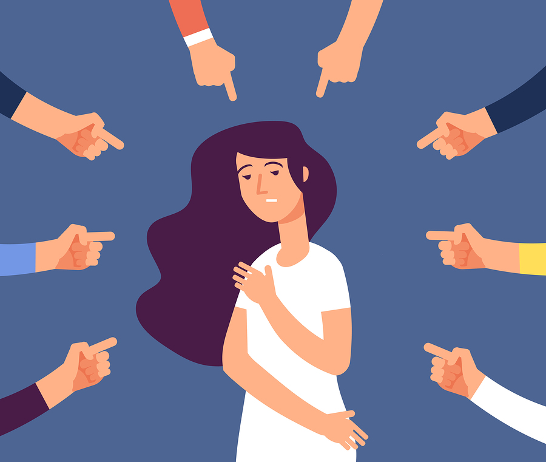
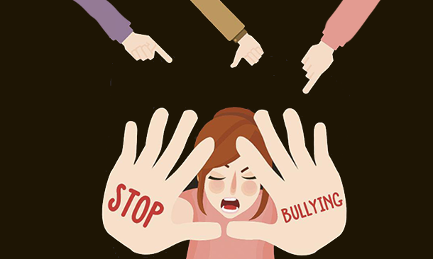

¿QUE ES?
El acoso escolar o bullying es la exposición que sufre un niño a daños físicos y psicológicos de forma intencionada y reiterada por parte de otro, o de un grupo de ellos, cuando acude al colegio. El acosador aprovecha un desequilibrio de poder que existe entre él y su víctima para conseguir un beneficio (material o no), mientras que el acosado se siente indefenso y puede desarrollar una serie de trastornos psicológicos que afectan directamente a su salud o incluso, en situaciones extremas, conductas autodestructivas. El bullying escolar se suele producir durante el recreo, en la fila para entrar a clase, en los baños, los pasillos, los cambios de clase, al entrar y salir del centro, en el transporte escolar o en el comedor. También puede ocurrir en el aula, cuando el profesor está escribiendo en la pizarra o mientras está atendiendo a otros alumnos.
CAUSAS
Las causas que originan el bullying dependen de cada caso concreto, aunque suelen tener unas características comunes: el acosador escolar no tiene empatía y, por tanto, es incapaz de ponerse en el lugar del acosado y ser sensible a su sufrimiento El origen de la violencia del acosador puede venir causado por problemas sociales o familiares, que pueden provocar que el niño desarrolle una actitud agresiva y que en la adolescencia sea violento. "En muchas ocasiones, los acosadores son personas que también han sido acosadas", precisa Díaz-Caneja. Otros factores que pueden incidir son una situación socioeconómica desfavorable en casa, poca organización en el hogar o tensiones entre los padres. También influyen factores relacionados con el colegio y los profesionales que allí trabajan. "El clima escolar es clave", afirma la experta. La psiquiatra resalta los elementos que más inciden: "La convivencia y el hecho de que haya una cultura que no solo prevenga el bullying, sino que promueva otros valores". A largo plazo, se ha comprobado que se obtienen mejores resultados al fomentar lo positivo que al prevenir lo negativo.
PREVENCION
La prevención del harassment o acoso escolar es fundamental para minimizar y reducir sus efectos cuanto antes. Dado que las causas que motivan el bullying son muy diferentes hay que buscar soluciones al problema mediante una propuesta amplia y abierta contando con el diálogo como la principal herramienta para atajarlo.
TIPOS
Según el documento Pautas para padres y madres ante el acoso escolar, de Save the Children, las formas que utiliza el acosador para intimidar a su víctima se dividen de la siguiente manera:
Acoso físico: El acosador golpea, empuja o utiliza algún instrumento para hacer daño físico a su víctima. También puede esconder sus cosas.
Acoso verbal: Consiste en insultar, poner motes, hacer amenazas o provocar a otro niño.
Acoso social: Este tipo de bullying se produce cuando el acosador decide aislar a su víctima difunde rumores, convence a otros niños para que no hablen con él o lo humillan en público para que el acosado se sienta aislado.
Acoso sexual: Son todas las acciones que tienen que ver con los actos sexuales (como tocamientos no consentidos) o que se burlan de la orientación sexual de la víctima.
Acoso por internet o cyberbullying: Es un tipo de acoso escolar que ocurre a través de móviles, tabletas, ordenadores, etc. En estos casos el acosador suele enviar mensajes de texto o correos electrónicos desagradables; difundir rumores a través del email o en las redes sociales, o imágenes y vídeos denigrantes, así como crear perfiles falsos que pueden resultar embarazosos.
Este tipo de acoso está aumentando en los últimos años y se caracteriza porque, a menudo, los niños que sufren cyberbullying también son acosados en persona. Además, por las características de internet puede suceder 24 horas al día, 7 días a la semana y afectar al niño cuando está solo.
En el cyberbullying las imágenes y los mensajes pueden publicarse de forma anónima y llegar rápidamente a un gran número de personas. Estos mensajes inapropiados e hirientes son muy complicados de eliminar cuando ya están publicados.